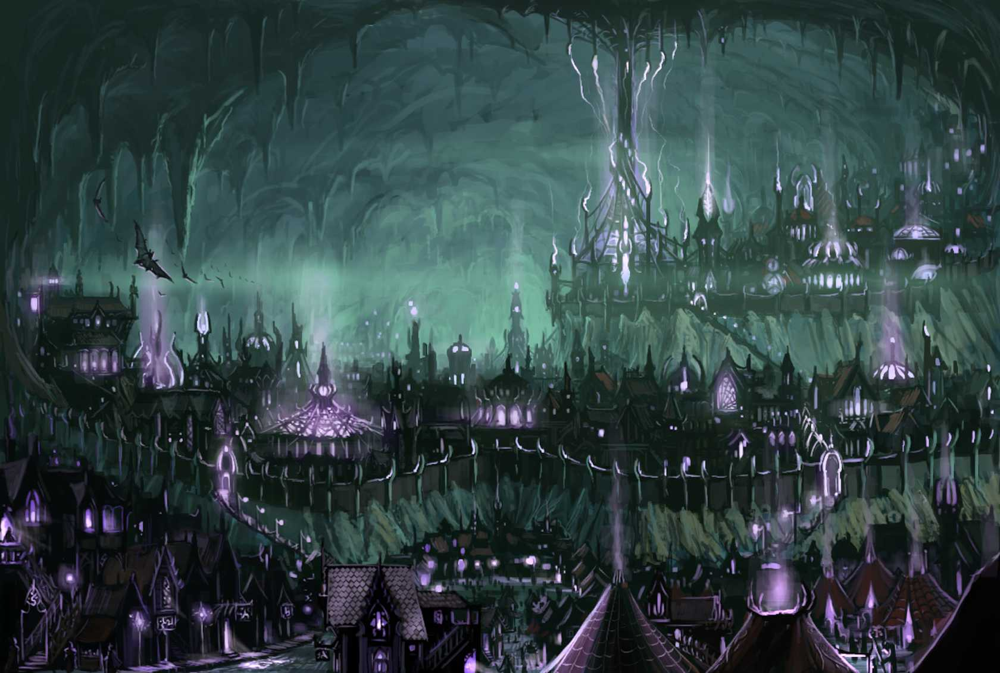

Menzoberranzan - Your Party's General Knowledge
Below is general information about the seat of drow power in the north, Menzoberranzan. The city of spiders.
Introduction
Home to roughly 20,000 drow.Menzoberranzan is the archetypal drow city, divided by a number of noble houses and ruled by priestesses of Lolth. Betrayal and assassination are a way of life here, and a cruel and suspicious nature is a sign of good breeding.
Menzoberranzan has the dubious distinction of being one of the few drow cities located in the Upperdark. It lies about 2 miles under the Surbrin Vale, between the Moonwood and the Frost Hills. The city occupies an irregularly shaped cavern more than 2 miles wide at its widest point. The ceiling is 1,000 feet high, and stalactites, stalagmites, and columns litter the cavern. All of them have been worked or shaped, and the continuous effect across the entire cavern can be mesmerizing to the uninitiated. Some of the larger stalagmites have been converted to castles and homes for drow noble Houses. These sparkle with permanent faerie fire effects, creating a soft, multicolored glow that suffuses the cavern.
Slavery is legal and socially favored in Menzoberranzan, and it permeates every district of the city. The variety of slaves is astonishing. It is not legal to enslave other Menzoberranyr drow, but indentured servitude is practiced with gleeful malice.
The drow of Menzoberranzan are universally hated and feared throughout the Northdark, and they in turn regard their neighbours with condescension and hungry ambition. Their merchant system, however, is the one of the best in the Underdark. Other cities have better markets, and some have more valuables, but in terms of total gold, no other settlement in the Northdark can match the mercantile might of the City of Spiders.
This focus on commercial gain means that Menzoberranzan is open (if not terribly hospitable) to anyone who wants to buy or sell. Non drow of all races, faiths, and outlooks come here. The city caters to these foreign merchants as much as necessary to get their money, but no further. Anyone who sets foot in the city is fair game for the warring noble Houses, and visitors often become pawns in their schemes for power. Many visitors act as fulcrums for various drow plans without ever knowing how or why. In addition to the parade of Material Plane merchants and buyers, demons and devils regularly enter the Bazaar district with plane shift to buy and sell favors.
The city's internal machinations have continued unabated for millennia. Houses that grow weak are destroyed, and new ones rise up to find favor in Lolth's many eyes. Their full history would constitute a nearly endless logbook of treachery, spite, and naked ambition. Within the last century, this pattern has seemingly accelerated; House Do'Urden ascended to Ninth House of Menzoberranzan with meteoric swiftness, destroyed the Fourth House (DeVir) and seemed destined for greatness, only to falter in a series of disasters leading to the destruction of the House.

General Info
General Features
There are several districts each with their own distinct features, in general the city is simply dangerous and dark. With light cast from the central pillar 'Narbondel'Personages
Matron Baenre rules the first house of Menzo, and all of the city. Little is known of other important figures.Locales
Several of the more prominent places are listed below.This academy sits proudly above the floor of the city in a side cavern. All noble-born drow, and many non nobles who show exceptional promise, spend many long years studying here before returning to their Houses. Tier Breche consists of three separate schools: Melee-Magthere, the school of combat; Sorcere, the school of wizardry; and Arach-Tinilith, the school of clerical magic. The current mistress of Arach-Tinilith is Quenthel Baenre, and Gromph Baenre, as Archmage, heads Sorcere. This thick column of stone near the centre of the cavern is a major landmark in tha city and the only bit of stone that remains in its natural form. The column is a fixture of daily life. To mark the end of an old day and the beginning of a new, the Archmage lights up the stone with creeping fire from bottom to top. This ritual is the closest thing Menzoberranzan citizens have to a clock
City Districts
- Donigarten: This area supplies much of the city's food. The center of Donigarten is a small, deep lake of the same name whose shores are surrounded by slave-tended fungi farms. The lake is stocked with eels and fish, and deep rothé are kept on an island in the middle. The district isn't exactly off limits, but the guards here pay very close attention to what goes on, especially since the uprising.
- Braeryn: This would be considered the "rough" part of town in a surface city, home to out-of-favor drow and low-class members of other races. Poor craftsfolk, laborers, peddlers, and rogues of all description crowd the tenements and stinking taphouses of this district.
- Eastmyr: Drow commoners, mercenaries, and lesser merchants live here. The noble Houses are heavily engaged in many of the businesses in this district, and Eastmyr regularly falls in and out of favor as a bolt-hole or springboard for various schemes.
- Duthcloim: Common drow with money and connections live here, alongside important nondrow merchants.
- The Bazaar: This area is where the city's open trading occurs. Members of nearly every race on Faerûn pass through here as either traders or slaves. Any item or service with any value at all can be bought, sold, or at least arranged for here. Visiting merchants know that trading with drow can be as dangerous as fighting them.
- Narbondellyn: Newer, brasher noble Houses burning for power line the wall beneath the Qu'ellarz'orl plateau. The riskiest gambits come from these Houses, who claim to want nothing other than to serve their goddess by killing their superiors.
- Ou'ellarz'orl: This raised plateau on the southern end of the cavern known as The Place of Nobles. A forest of giant mushrooms hides activities on this plateau from the lower parts of the city. The Houses of the Qu'ellarz'orl are the oldest and wealthiest of the city.
- Baenre Plateau: The highest point in the city, situated above and behind Qijellarz'orl, this plateau is home to House Baenre. Overlooking the city, House Baenre rules with unmatched political finesse. Baenre is strong enough to fight any three lesser Houses and win.